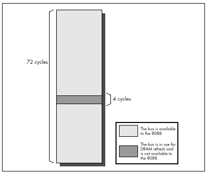

| Previous | Table of Contents | Next |
More than anything, the above rules mean using the registers as heavily as possible, both because register-only instructions are short and because they don’t perform memory accesses to read or write operands. However, using the registers is a rule of thumb, not a commandment. In some circumstances, it may actually be faster to access memory. (The look-up table technique is one such case.) What’s more, the performance of the prefetch queue (and hence the performance of each instruction) differs from one code sequence to the next, and can even differ during different executions of the same code sequence.
All in all, writing good assembler code is as much an art as a science. As a result, you should follow the rules of thumb described here—and then time your code to see how fast it really is. You should experiment freely, but always remember that actual, measured performance is the bottom line.
In this chapter I’ve taken you further and further into the depths of the PC, telling you again and again that you must understand the computer at the lowest possible level in order to write good code. At this point, you may well wonder, “Have we gotten low enough?”
Not quite yet. The 8-bit bus and prefetch queue cycle-eaters are low-level indeed, but we’ve one level yet to go. Dynamic RAM refresh and wait states—our next topics—together form the lowest level at which the hardware of the PC affects code performance. Below this level, the PC is of interest only to hardware engineers.
Before we begin our discussion of dynamic RAM refresh, let’s step back for a moment to take an overall look at this lowest level of cycle-eaters. In truth, the distinctions between wait states and dynamic RAM refresh don’t much matter to a programmer. What is important is that you understand this: Under certain circumstances, devices on the PC bus can stop the CPU for 1 or more cycles, making your code run more slowly than it seemingly should.
Unlike all the cycle-eaters we’ve encountered so far, wait states and dynamic RAM refresh are strictly external to the CPU, as was shown in Figure 4.1. Adapters on the PC’s bus, such as video and memory cards, can insert wait states on any bus access, the idea being that they won’t be able to complete the access properly unless the access is stretched out. Likewise, the channel of the DMA controller dedicated to dynamic RAM refresh can request control of the bus at any time, although the CPU must relinquish the bus before the DMA controller can take over. This means that your code can’t directly control wait states or dynamic RAM refresh. However, code can sometimes be designed to minimize the effects of these cycle-eaters, and even when the cycle-eaters slow your code without there being a thing in the world you can do about it, you’re still better off understanding that you’re losing performance and knowing why your code doesn’t run as fast as it’s supposed to than you were programming in ignorance.
Let’s start with DRAM refresh, which affects the performance of every program that runs on the PC.
Dynamic RAM (DRAM) refresh is sort of an act of God. By that I mean that DRAM refresh invisibly and inexorably steals a certain fraction of all available memory access time from your programs, when they are accessing memory for code and data. (When they are accessing cache on more recent processors, theoretically the DRAM refresh cycle-eater doesn’t come into play, but there are other cycle-eaters waiting to prey on cache-bound programs.) While you could stop DRAM refresh, you wouldn’t want to since that would be a sure prescription for crashing your computer. In the end, thanks to DRAM refresh, almost all code runs a bit slower on the PC than it otherwise would, and that’s that.
A bit of background: A static RAM (SRAM) chip is a memory chip that retains its contents indefinitely so long as power is maintained. By contrast, each of several blocks of bits in a dynamic RAM (DRAM) chip retains its contents for only a short time after it’s accessed for a read or write. In order to get a DRAM chip to store data for an extended period, each of the blocks of bits in that chip must be accessed regularly, so that the chip’s stored data is kept refreshed and valid. So long as this is done often enough, a DRAM chip will retain its contents indefinitely.
All of the PC’s system memory consists of DRAM chips. Each DRAM chip in the PC must be completely refreshed about once every four milliseconds in order to ensure the integrity of the data it stores. Obviously, it’s highly desirable that the memory in the PC retain the correct data indefinitely, so each DRAM chip in the PC must always be refreshed within 4 µs of the last refresh. Since there’s no guarantee that a given program will access each and every DRAM block once every 4 µs, the PC contains special circuitry and programming for providing DRAM refresh.
On the original 8088-based IBM PC, timer 1 of the 8253 timer chip is programmed at power-up to generate a signal once every 72 cycles, or once every 15.08µs. That signal goes to channel 0 of the 8237 DMA controller, which requests the bus from the 8088 upon receiving the signal. (DMA stands for direct memory access, the ability of a device other than the 8088 to control the bus and access memory directly, without any help from the 8088.) As soon as the 8088 is between memory accesses, it gives control of the bus to the 8237, which in conjunction with special circuitry on the PC’s motherboard then performs a single 4-cycle read access to 1 of 256 possible addresses, advancing to the next address on each successive access. (The read access is only for the purpose of refreshing the DRAM; the data that is read isn’t used.)
The 256 addresses accessed by the refresh DMA accesses are arranged so that taken together they properly refresh all the memory in the PC. By accessing one of the 256 addresses every 15.08 µs, all of the PC’s DRAM is refreshed in 256 x 15.08 µs, or 3.86 µs, which is just about the desired 4 µs time I mentioned earlier. (Only the first 640K of memory is refreshed in the PC; video adapters and other adapters above 640K containing memory that requires refreshing must provide their own DRAM refresh in pre-AT systems.)
Don’t sweat the details here. The important point is this: For at least 4 out of every 72 cycles, the original PC’s bus is given over to DRAM refresh and is not available to the 8088, as shown in Figure 4.5. That means that as much as 5.56 percent of the PC’s already inadequate bus capacity is lost. However, DRAM refresh doesn’t necessarily stop the 8088 in its tracks for 4 cycles. The Execution Unit of the 8088 can keep processing while DRAM refresh is occurring, unless the EU needs to access memory. Consequently, DRAM refresh can slow code performance anywhere from 0 percent to 5.56 percent (and actually a bit more, as we'll see shortly), depending on the extent to which DRAM refresh occupies cycles during which the 8088 would otherwise be accessing memory.

Figure 4.5 The PC bus dynamic RAM (DRAM) refresh.
| Previous | Table of Contents | Next |